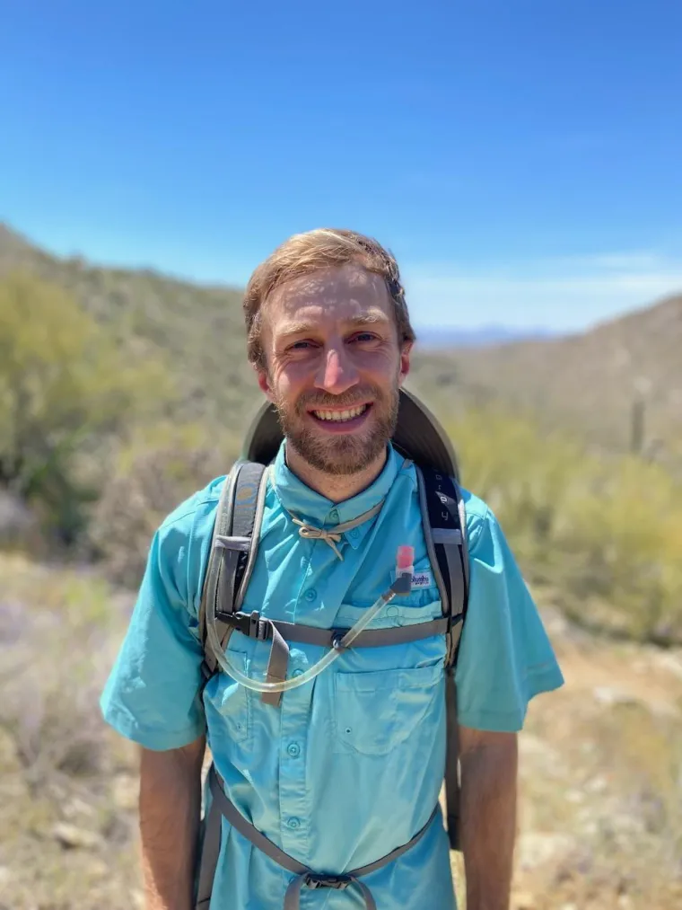
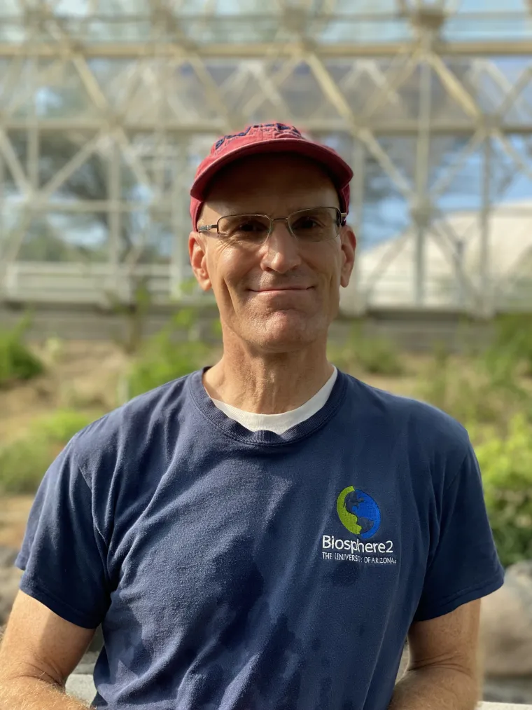
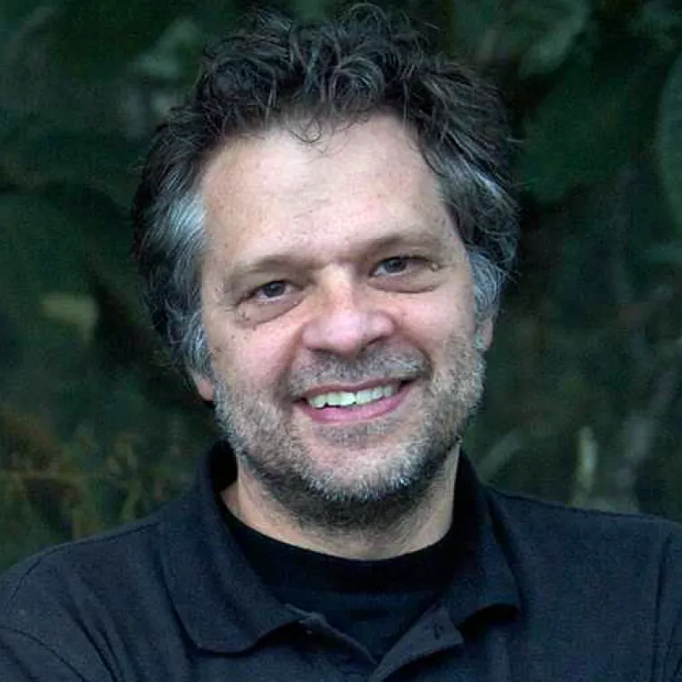
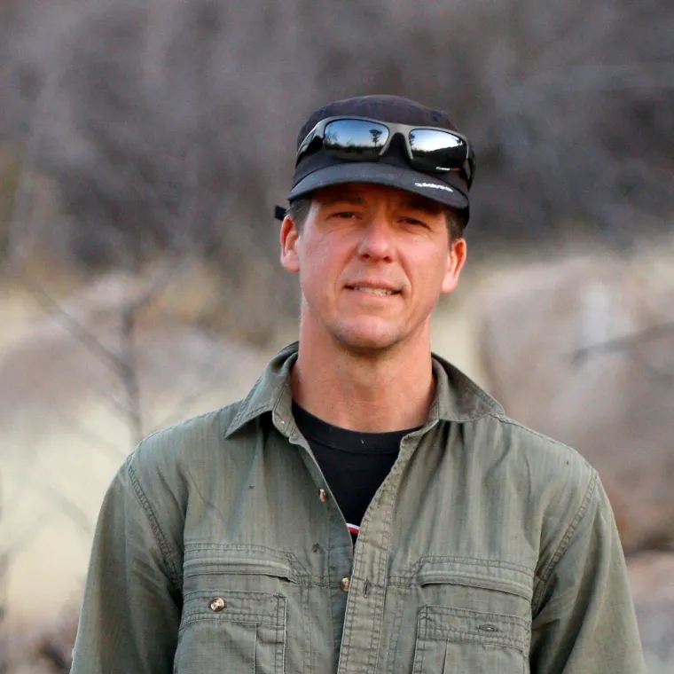
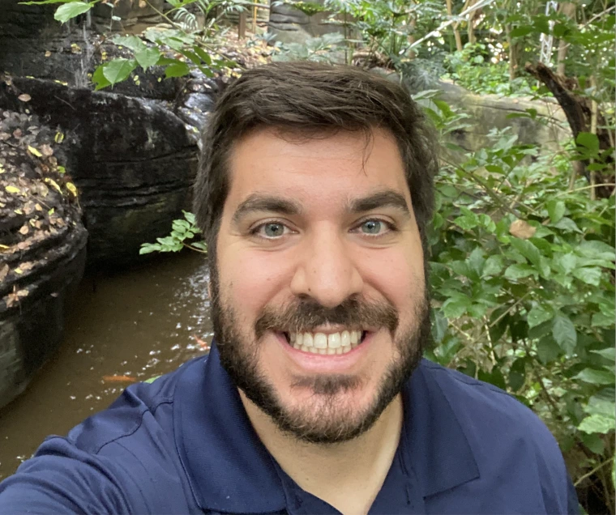
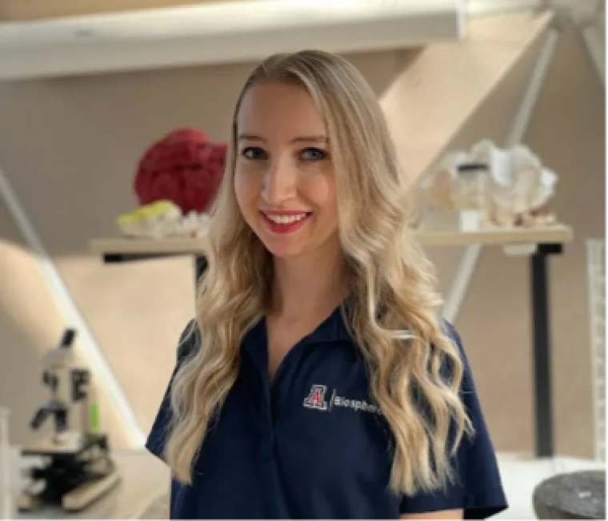
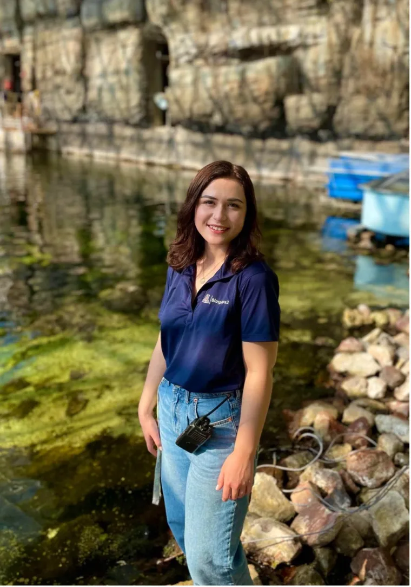
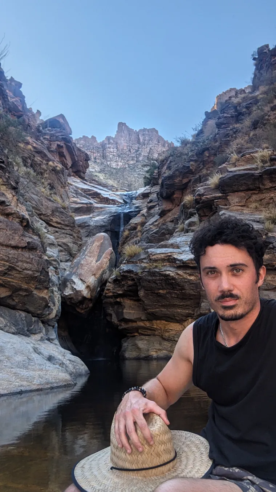

John Adams
Deputy Director, Chief Operations Officer

Scientists, research specialists, technologists, and staff supporting Biosphere 2 research systems.
Scientists, research specialists, technologists, and staff supporting Biosphere 2 research systems.
Deputy Director, Chief Operations Officer
Research Technologist III, Biosphere 2 Podcast Host, Media Producer
Director of Analytical lab, Associate Professor, Department of Environmental Science and Biosphere 2, University of Arizona
Researcher
Electrical Engineer

Analytical Laboratory Coordinator, Research Technologist II, Pronouns: he, him, his

Rain Forest Research Specialist, Terrestrial Biome Manager

Director of Landscape Evolution Observatory Research
Director of Food, Water, Energy Research
Director of Marine Research
Director of Rain Forest Research, Assistant Research Professor

Research Director of SAM

Rainforest Post-Doc

Research Specialist

Research Specialist
Innovation Officer

Postdoctoral Resercher